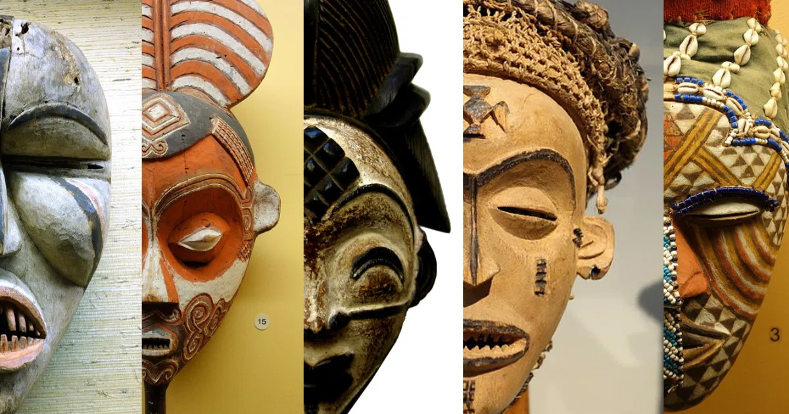
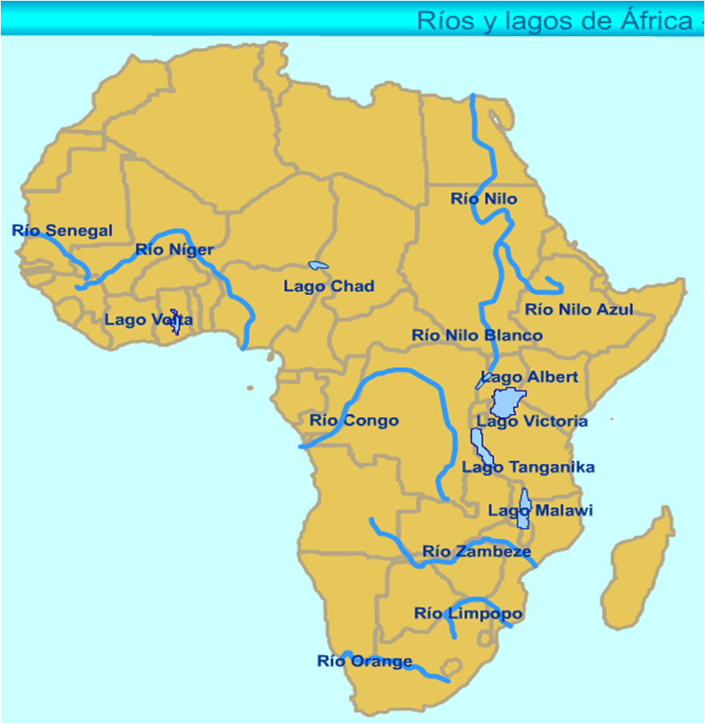

A África é um continente de dimensões continentais e de importância histórica e cultural inestimável. Com cerca de 30 milhões de quilômetros quadrados, é o segundo maior continente do mundo e abriga mais de 1,4 bilhão de habitantes distribuídos em 54 países. Sua diversidade étnica, linguística e ambiental faz da África um dos lugares mais fascinantes do planeta.
História A África é reconhecida como o berço da humanidade, com registros dos primeiros hominídeos encontrados em regiões como o Vale do Rift, no leste africano. Civilizações antigas floresceram no continente, como o Egito, Núbia, Cartago, Mali e Axum, que contribuíram significativamente para o desenvolvimento da escrita, arquitetura, matemática e astronomia. A partir do século XV, a África foi alvo da colonização europeia, marcada pelo tráfico transatlântico de escravizados e pela exploração de seus recursos naturais. A descolonização ocorreu principalmente no século XX, mas os efeitos da colonização ainda são sentidos em muitos aspectos sociais e políticos.
| Cultura | |
| A cultura africana é extremamente rica e diversa. Estima-se que existam mais de 2.000 línguas faladas no continente, refletindo a multiplicidade de etnias e tradições. A música e a dança são expressões culturais centrais, com ritmos e instrumentos únicos que influenciaram gêneros musicais em todo o mundo, como o jazz, o blues e o samba. A arte africana, com suas máscaras, esculturas e tecidos coloridos, é reconhecida internacionalmente. A oralidade é uma característica marcante, com histórias e saberes transmitidos de geração em geração por meio de contadores de histórias conhecidos como griôs. |  |
Fauna e Flora A África possui uma das maiores biodiversidades do planeta. É o lar de animais emblemáticos como leões, elefantes, rinocerontes, girafas, zebras e gorilas, muitos dos quais vivem em ecossistemas como as savanas, florestas tropicais e desertos. A flora africana também é variada, com destaque para as florestas equatoriais da Bacia do Congo, as savanas do Serengeti e as regiões áridas do Saara. No entanto, a biodiversidade africana enfrenta ameaças crescentes, como o desmatamento, a caça ilegal e as mudanças climáticas.
| Hidrografia | |
|  |
A hidrografia africana é composta por importantes rios e lagos que desempenham papel vital na vida econômica e social do continente. O rio Nilo, com mais de 6.600 km, é o mais longo do mundo e atravessa vários países até desaguar no Mar Mediterrâneo. Outros rios de destaque incluem o Congo, o Níger, o Zambeze e o Limpopo. A África também abriga grandes lagos, como o Vitória, o Tanganica e o Maláui, que são fontes de água, pesca e transporte para milhões de pessoas. |
Conclusão A África é um continente de contrastes e potencialidades. Apesar dos desafios históricos e contemporâneos, como pobreza, conflitos e desigualdade, a África possui uma riqueza cultural, histórica e natural incomparável. Com uma população jovem, recursos abundantes e crescente integração regional, o continente tem condições de protagonizar transformações significativas no cenário global nas próximas décadas. Investimentos em educação, infraestrutura e preservação ambiental são fundamentais para garantir um futuro mais justo e sustentável para seus povos.